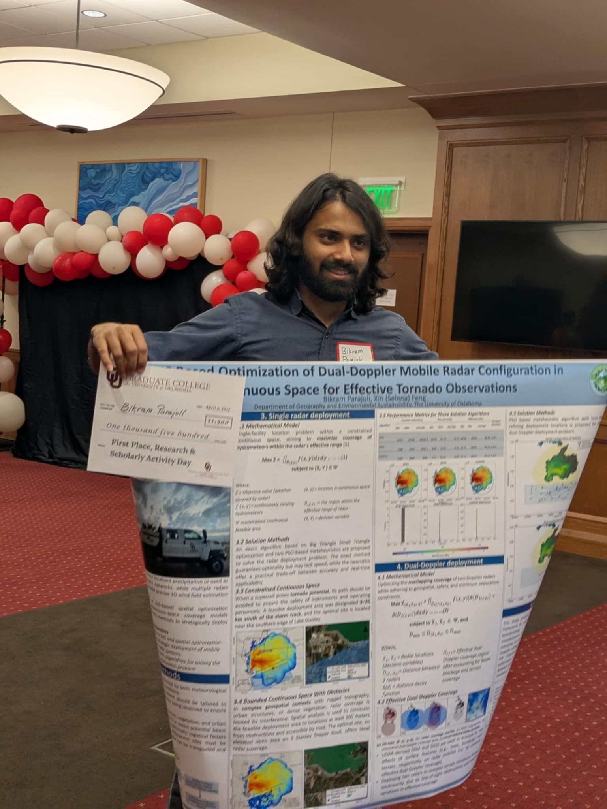
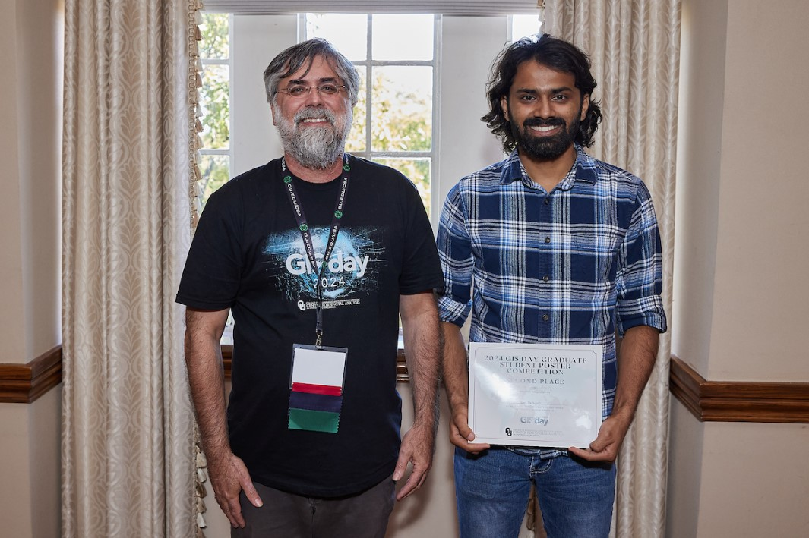

Awards & Honors
First Place — Graduate & Postdoctoral Research and Scholarly Activity Day Poster Competition
University of Oklahoma Graduate College (2025)

Second Place — GIS Day Graduate Poster Competition
Center for Spatial Analysis, University of Oklahoma (2024)

Outstanding Participant Award — Machine Learning
International GeoInformatics Summer School (2020)
CSC Scholarship
Master of Engineering in Cartography and Geographical Information Engineering (2019)